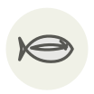

Sériole du Japon (buri)
Japanese amberjack (buri)
| Nom latin | Seriola quinqueradiata |
|---|---|
| Famille | Poissons & fruits de mer |
| Origine | Mer du Japon, en hiver |
| Saison | novembre – février |
| Goût | Riche · Umami · Charnu |
| Prix courant | 35–60 €/kg |
Ce que c’est
Le buri est un shusse-uo, un poisson qui change de nom en grandissant — wakashi, inada, warasa, puis buri — si bien qu’en offrir au Nouvel An, c’est souhaiter une promotion. Le poisson d’hiver pêché au large de Himi et de Toyama est si gras que le marché le cote à part, sous le nom de kan-buri.
En cuisine
Pour le buri-daikon, cuisez d’abord le daikon seul jusqu’à translucidité, puis ajoutez le poisson dix minutes avant la fin. Ébouillantez collier et arêtes avant de les mettre : c’est cette étape qui enlève l’odeur de sang qui gâche le bouillon.
S’accorde avec
Daïkon Sauce soja koikuchi Mirin (hon-mirin) Saké junmai Gingembre Poireau japonais Wasabi Yuzu koshō
Même espèce
De saison en même temps
Anguille Oie Bécasse Canard colvert Chapon Congre
Une erreur ici, ou un oubli ? Dites-le nous